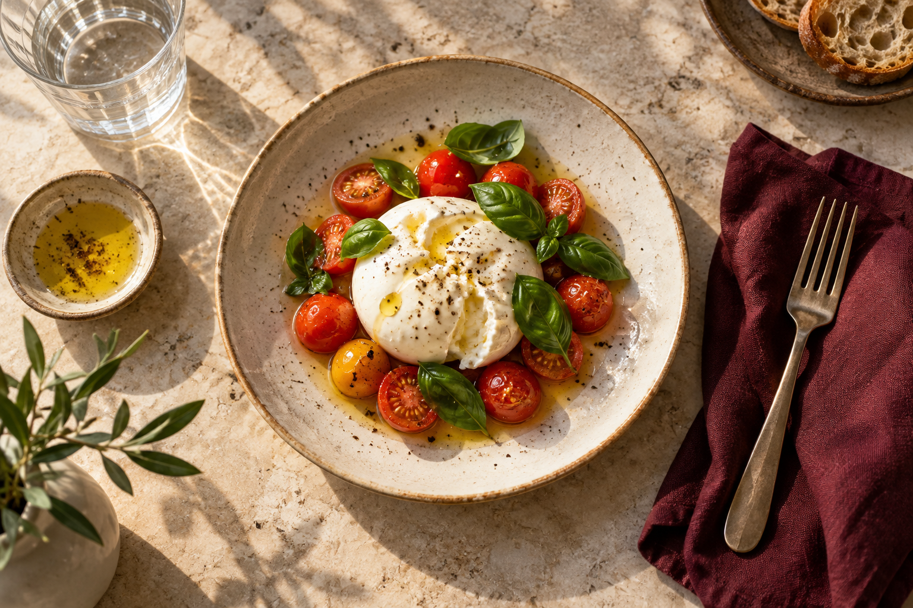

GOOD FOOD. LITTLE JOURNEYS.
맛있는 여행의 기록
맛있었던 한 끼와, 그날의 여행을 함께.
00곳의 소중한 기억
아직 기록이 없어요
THE FIRST PAGE우리의 첫 번째 맛집은
우리의 첫 번째 맛집은
어디였나요?
가게 이름 하나, 사진 한 장.
좋아하는 맛을 나만의 기록으로 남겨보세요.

A LITTLE TASTE OF HAPPINESS한 입, 한 장, 한 줄.
찾는 기록이 없어요
다른 검색어나 음식 종류로 찾아보세요.